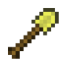
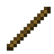
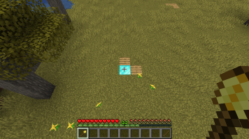
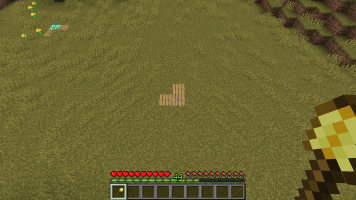
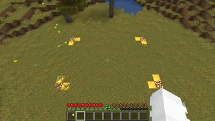

Claiming (Grundstück erstellen) 💡 Feedback geben
✅ Ingame-Tutorial verfügbar: /warp tutorial_claiming
Mit einem Claim (dt. Grundstück) schützt du deine Bauwerke, Kisten, Öfen, etc. vor Griefing und Diebstahl.
Werkzeuge
Goldschaufel
/kit Claim oder durch Crafting. Wenn du eine Goldschaufel in der Hand hältst, werden dir alle Claim-Grenzen in deiner Nähe durch Partikel angezeigt. Gelbe Partikel zeigen Claimgrenzen, blaue Partikel Subclaimgrenzen an.
Mit dem Befehl /claimcorners lassen sich dauerhaft die Claimgrenzen anzeigen (wie beim Halten der Schaufel in der Hand). Eine erneute Eingabe des Befehls schaltet die Anzeige wieder aus, es kann aber auch /claimcorners [on/off] verwendet werden.
Stock
Shift rechtsklickst, werden alle Claims in deiner Umgebung angezeigt.
Claim erstellen
Bitte beachten:
Ein Claim bietet nicht die Möglichkeit, sich dorthin zu teleportieren!
Nutze /sethome <homename>, um dich mit /home <homename> zu teleportieren.
Klicke zwei schräg gegenüberliegende Eckpunkte mit der Goldschaufel an, um einen beliebig großen Claim zu erstellen. Eine fremde Person kann zwar deinen Claim immer noch betreten, dort aber nichts verändern.



Der Befehl /claim erstellt einen kleinen Claim mit der Standardgröße von 11x11 Blöcken.
Subclaim erstellen
Es ist möglich, Unterclaims ("Subclaims") innerhalb eines Claims zu erstellen. In diesem Subclaim kannst du Spielern andere Rechte zuweisen als im übergeordneten Claim. Explosionen können ebenfalls spezifisch für Subclaims aktiviert werden. Berechtigungen des übergeordneten Claims gelten immer auch auf den Subclaims.
/subdivideclaims
Mit diesem Befehl stellst du deine Goldschaufel vom normalen Claim-Modus in den Subclaim-Modus um.
/basicclaims
Mit diesem Befehl kehrst du wieder in den normalen Claim-Modus zurück.
/restrictsubclaim
Mit diesem Befehl werden alle Einstellungen des Subclaims, in dem du stehst, gelöscht.
Größe des Claims ändern
Klicke mit der Goldschaufel auf eine bestehende Ecke des Claims, um die Ecke an eine neue Stelle zu verschieben.
Claim entfernen
Nutze /unclaim, während du auf einem Claim stehst, um ihn zu entfernen.
Claimblöcke
Um einen Claim erstellen zu können, benötigst du eine ausreichende Anzahl an Claimblöcken. Diese erhältst du durch die Claim-Chest (siehe Voten) oder Spielzeit. Alle Spieler starten mit 2000 Claimblöcken und erhalten pro Stunde 200 Claimblöcke durch aktives Spielen, bis zu einem Maximum von 100.000 Claimblöcken.
/claimlist
Zeigt alle deine Claims sowie die verbrauchten & verfügbaren Claimblöcke an.
/buyclaimblocks <anzahl>
Mit diesem Befehl kannst du Claimblöcke für 5 ✪ pro Stück kaufen.
Claimblöcke in die Industriewelt übertragen
Um in der Industriewelt bauen zu können, muss vorher ein Bereich geclaimt werden.
Die Claimblöcke in Bau- und Industriewelt sind voneinander unabhängig, d.h. bei Bedarf müssen Claimblöcke von der Bauwelt in die Industriewelt (oder zurück) übertragen werden. Dies ist folgendermaßen möglich:
-
/cbl store <anzahl>
Lagert die angegebene Anzahl an Claimblöcken für eine Übertragung ein. -
Welt wechseln
-
/cbl take <anzahl>
Schreibt die für eine Übertragung gelagerten Claimblöcke der Welt gut.
Mit /cbl bal kannst du die gelagerten Claimblöcke sowie die in der Welt verfügbaren Claimblöcke an.
Trusting
Claims können von mehreren Spielern verwendet werden. Um dies zu verwalten, gibt es eine Reihe an Befehlen:
/trust <spielername/all>
Vergabe von Rechten zum Verändern aller Blöcke im Claim.
/permissiontrust <spielername/all>
Vergabe von Rechten zur Verwaltung eines Claims an einen Spieler. Ein Spieler mit permissiontrust kann selber anderen Personen trust vergeben, ohne dass ihm der Claim selbst gehört.
/containertrust <spielername/all>
Vergabe von Rechten zum Öffnen und Editieren von Kisten, Dispensern, etc. sowie das Betätigen von Knöpfen, Hebeln, Türen, etc.
/accesstrust <spielername/all>
Vergabe von Rechten zum Interagieren mit Knöpfen, Hebeln, Türen, etc.
/untrust <spielername/all>
Entziehen aller erteilten Rechte eines Spielers auf einem Claim.
/trustlist
Zeigt eine Liste aller Spieler, welche Trustrechte auf deinem Grundstück besitzen, an. Hier ist farblich aufgeführt, wer welche Rechte besitzt.
Weitere Befehle
/claimexplosions
Aktiviert Explosionen in deinem Claim. Diese Einstellung wird automatisch wieder deaktiviert, sobald der Server neu startet.
/claiminfo
Stellt eine Vielzahl an Claiminformationen zum Grundstück dar, auf welchem der Anwender sich befindet.